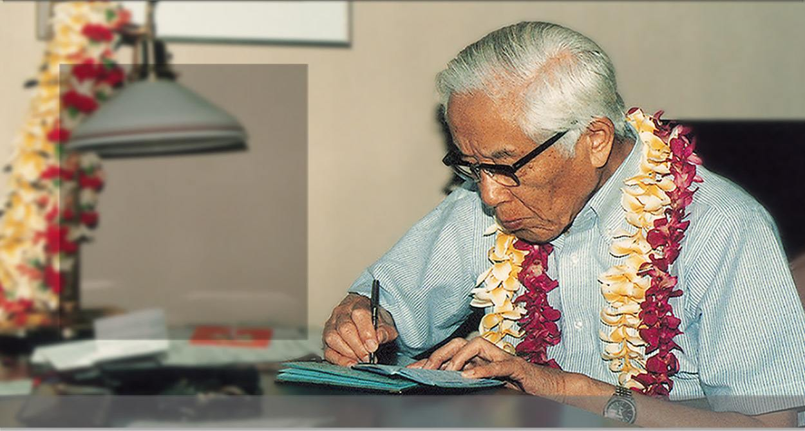
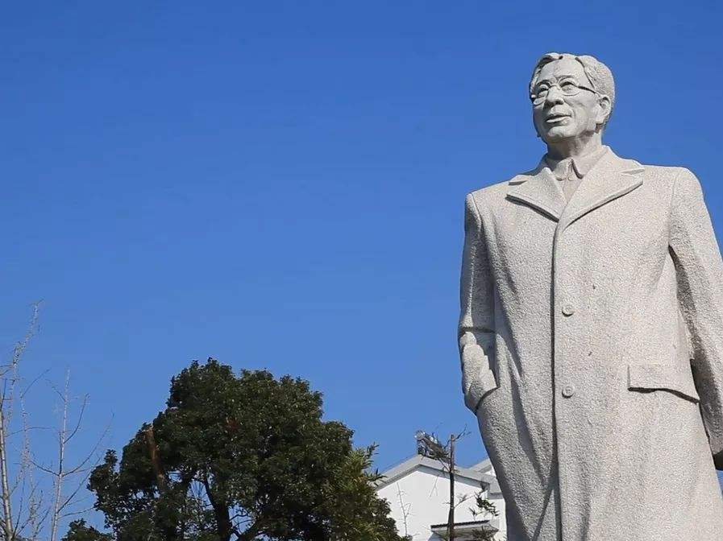
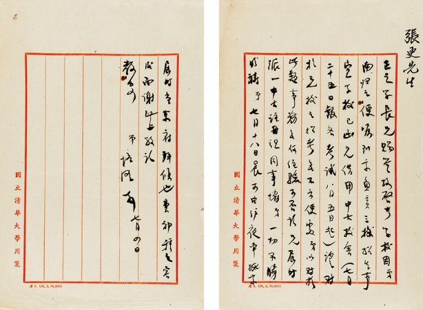

·Introduction
Zhou Peiyuan's photo
Zhou Peiyuan (1902.8.28-1993.11.24), a native of Yixing County, Jiangsu Province.
He is a famous fluid mechanics, theoretical physicist, educator and social activist. He is also a member of Jiusan Society and member of the Communist Party of China.
and academician of the Chinese Academy of Sciences, one of the founders of modern Chinese mechanics and one of the founders of theoretical physics.
He used to be the Dean of Tsinghua University, the Deputy Director of the University Council, the Dean, Vice President and President of Peking University,
and the Vice President of the Chinese Academy of Sciences. He is also the representative of the First, Second, Third, and Fourth National People's Congress,
member of the Fifth National People's Congress Standing Committee. Standing member of the 3rd and 4th National Committee of the Chinese People's Political Consultative Conference; member of the 4th Central Standing Committee of the Jiusan Society, Vice-Chairman of the 5th and 6th Central Committee, Chairman of the 7th and 8th Central Committee, and Honorary Chairman of the 9th Central Committee.
·Biography

Zhou Yuanpei born on August 28, 1902 in a scholarly family in Yixing County, Jiangsu Province
In 1919, he was admitted to Tsinghua School for secondary education.
In 1924, he graduated from the Higher Department of Tsinghua University.
He returned to China in 1929 and was hired as a professor in the Department of Physics, National Tsinghua University.
From 1936 to 1937, according to the sabbatical regulations of Tsinghua University,
Zhou Peiyuan went to the United States to conduct research in theoretical physics at the Institute for Advanced Study in Princeton.
In 1937, he returned to China on full leave.
Zhou Peiyuan was entrusted by the president Mei Yiqi to arrange the school to move to the south.
He served as a professor in the Department of Physics of Changsha Temporary University and Kunming National Southwest Associated University successively.
In 1955, he was elected as a member of the Chinese Academy of Sciences, and served as a standing member of the Department of Mathematical Chemistry.
Zhou Peiyuan died in Beijing on November 24, 1993.
·Thoughts

Zhou Peiyuan's academic achievements mainly lay the foundation of the turbulent model theory for the study of two important aspects of the basic theory of physics,
namely the gravitational theory in Einstein's general theory of relativity and the turbulent flow theory in fluid mechanics.
In terms of general relativity, Zhou Peiyuan has been devoted to solving the definite solution of the gravitational field equation and applying it to the study of cosmology.
In terms of gravitational theory, he put forward the important point of view that "harmonious conditions are physical conditions", and proposed and guided the experiment of
"Isotropy Test of Light Speed in Earth's Gravitational Field" by Comrade Li Yonggui of the Institute of High Energy, Chinese Academy of Sciences, etc.
·Works

1952.12 "Theoretical Mechanics"
1965.07 "The Theory of Space, Time, and Gravity"
1991 "Developing the West"
1991 "Kaihua Southwest"
1992.05 "Zhou Peiyuan Collection of Scientific Papers"
·Reference
Zhou Peiyuan - BaiduZhou Peiyuan - Wikipedia